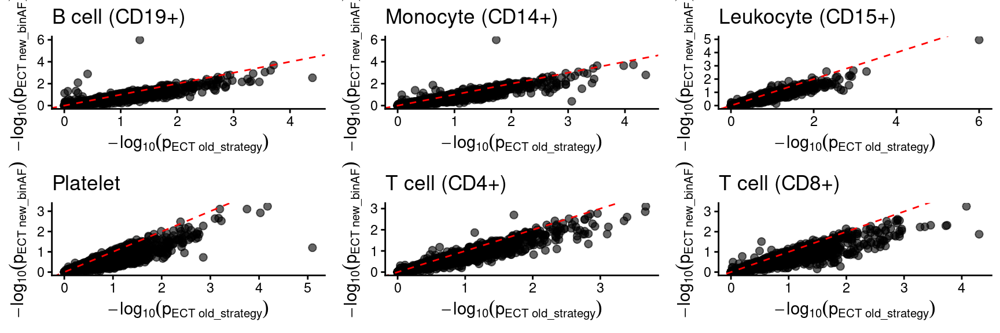
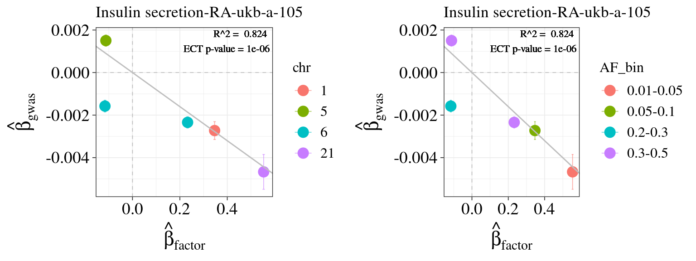
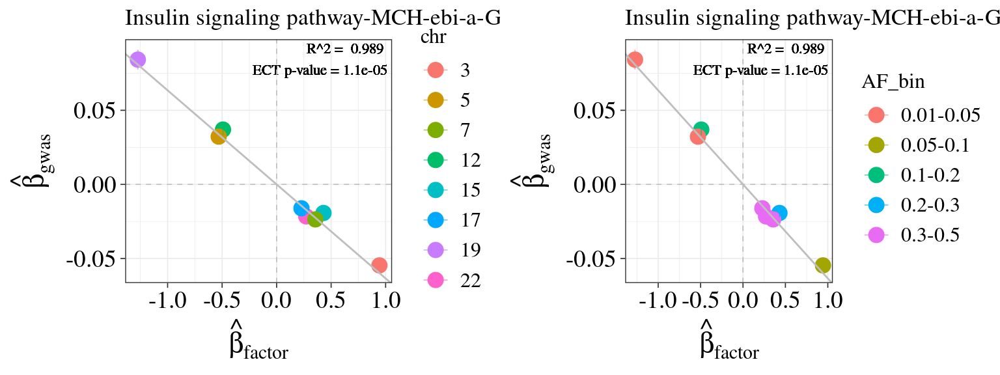
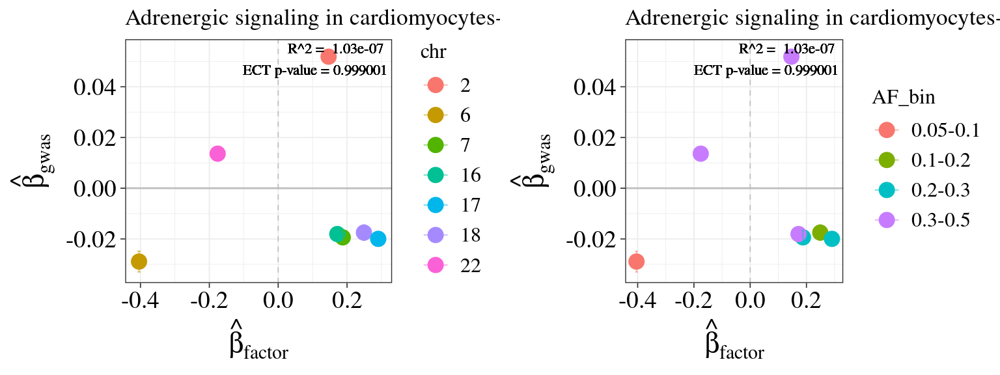
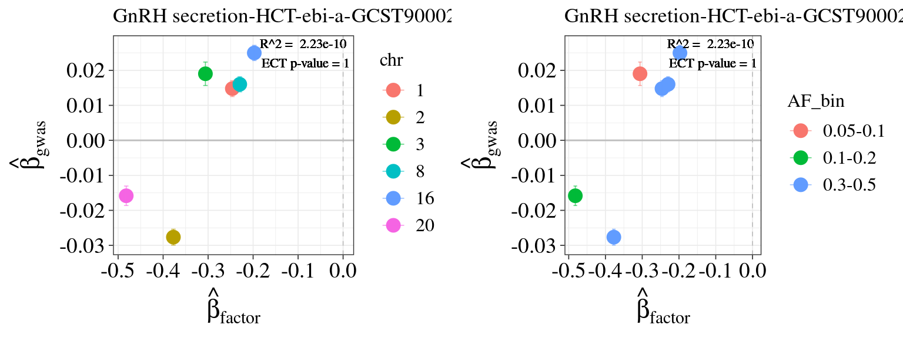
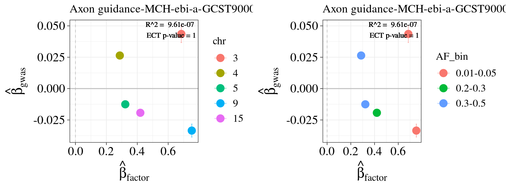
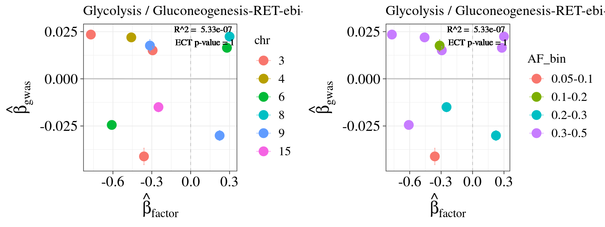
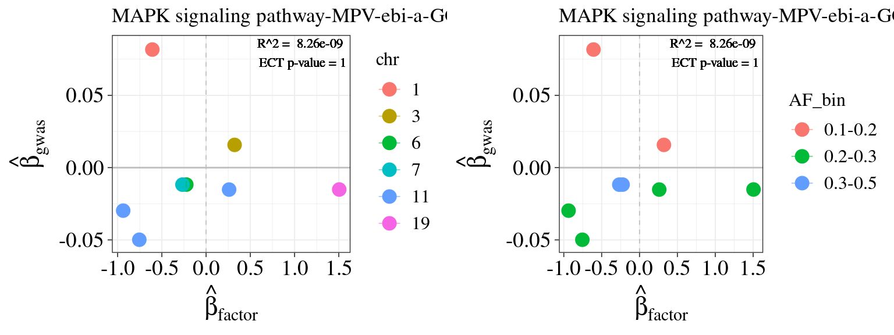
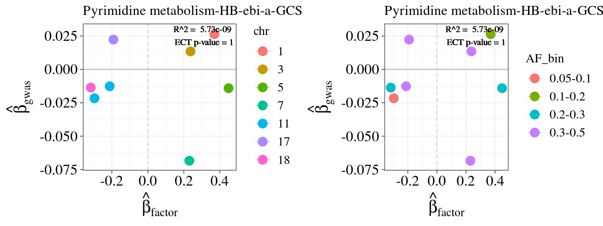
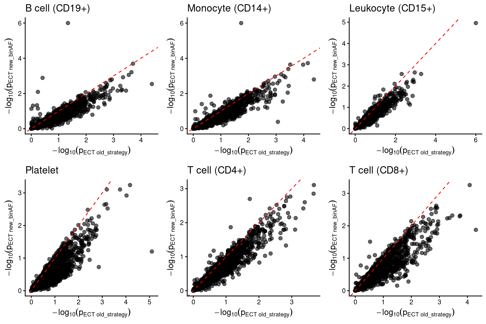

Summarizing ECT results – ≥ 5 supporting SNPs & ≥ 20 genes, CEDAR, bin AF
XSun
2026-01-07
Last updated: 2026-01-09
Checks: 6 1
Knit directory: factor_analysis_new/
This reproducible R Markdown analysis was created with workflowr (version 1.7.0). The Checks tab describes the reproducibility checks that were applied when the results were created. The Past versions tab lists the development history.
The R Markdown file has unstaged changes. To know which version of
the R Markdown file created these results, you’ll want to first commit
it to the Git repo. If you’re still working on the analysis, you can
ignore this warning. When you’re finished, you can run
wflow_publish to commit the R Markdown file and build the
HTML.
Great job! The global environment was empty. Objects defined in the global environment can affect the analysis in your R Markdown file in unknown ways. For reproduciblity it’s best to always run the code in an empty environment.
The command set.seed(20221201) was run prior to running
the code in the R Markdown file. Setting a seed ensures that any results
that rely on randomness, e.g. subsampling or permutations, are
reproducible.
Great job! Recording the operating system, R version, and package versions is critical for reproducibility.
Nice! There were no cached chunks for this analysis, so you can be confident that you successfully produced the results during this run.
Great job! Using relative paths to the files within your workflowr project makes it easier to run your code on other machines.
Great! You are using Git for version control. Tracking code development and connecting the code version to the results is critical for reproducibility.
The results in this page were generated with repository version 311ea69. See the Past versions tab to see a history of the changes made to the R Markdown and HTML files.
Note that you need to be careful to ensure that all relevant files for
the analysis have been committed to Git prior to generating the results
(you can use wflow_publish or
wflow_git_commit). workflowr only checks the R Markdown
file, but you know if there are other scripts or data files that it
depends on. Below is the status of the Git repository when the results
were generated:
Unstaged changes:
Modified: analysis/revision_summarizing_ECT_CEDAR_binAF.Rmd
Staged changes:
Modified: analysis/revision_num_pair_permut_ECT.Rmd
Modified: analysis/revision_num_pair_permut_ECT_binAF.Rmd
Deleted: analysis/revision_summarizing_ECT_CEDAR_binAF.knit.md
Note that any generated files, e.g. HTML, png, CSS, etc., are not included in this status report because it is ok for generated content to have uncommitted changes.
These are the previous versions of the repository in which changes were
made to the R Markdown
(analysis/revision_summarizing_ECT_CEDAR_binAF.Rmd) and
HTML (docs/revision_summarizing_ECT_CEDAR_binAF.html)
files. If you’ve configured a remote Git repository (see
?wflow_git_remote), click on the hyperlinks in the table
below to view the files as they were in that past version.
| File | Version | Author | Date | Message |
|---|---|---|---|---|
| Rmd | 311ea69 | XSun | 2026-01-08 | update |
| html | 311ea69 | XSun | 2026-01-08 | update |
| Rmd | 768f8ff | XSun | 2026-01-07 | update |
| html | 768f8ff | XSun | 2026-01-07 | update |
Introduction
We applied cutoffs of + - supporting SNP ≥ 5 and -
gene number in pathway ≥ 20
to filter the pairs before performing FDR control. All results presented below are based on this setting.
ECT strategy: When generating “random” GWAS effects of a SNP, we sample from GWAS SNPs with comparable AF with that SNP.
library(dplyr)
library(ggplot2)
library(gridExtra)
library(forcats)
library(tidyr)
# library(ensembldb)
# library(EnsDb.Hsapiens.v75)
# library(ggrepel)
# library(ggrastr)
celltypes <- c("B_cell","CD14_positive_monocyte","CD15_positive_leukocyte","platelet","T_cell","thymocyte")
types <- c("B cell (CD19+)","Monocyte (CD14+)","Leukocyte (CD15+)","Platelet","T cell (CD4+)","T cell (CD8+)")
names(types) <- celltypes
names(celltypes) <- types
source("/project/xinhe/xsun/pathway_factor/data_v2/traits_finalselection_SLEremoved.R")
folder_ect_summary <- "/project/xinhe/xsun/pathway_factor/analysis/1.ECT_v2/ECT_summary_binAF/"
DT::datatable(matrix())Number of supporting variants
p <- list()
for(celltype in celltypes){
df <- readRDS(paste0(folder_ect_summary, celltype,"_ECT_summary_poolalltraits_selected.RDS"))
df <- df[df$trait_id %in% traits_EUR,]
summary <- df %>%
count(num_supp_SNP, name = "Freq")
# Plot
p[[celltype]] <- ggplot(summary, aes(x = num_supp_SNP, y = Freq)) +
geom_bar(stat = "identity", fill = "steelblue") +
theme_bw(base_line_size = 0.3) +
ggtitle(types[celltype]) +
theme(plot.title = element_text(hjust = 0.5)) +
labs(x = "# of supporting SNPs in each pair", y = "# of factor–trait pairs") +
geom_text(
aes(label = ifelse(num_supp_SNP %% 5 == 0, as.character(Freq), "")),
colour = "black", size = 2, vjust = -0.1, family = "Times"
) +
annotate(
geom = "text",
x = Inf, y = Inf,
label = paste0("# of candidate pairs = ", sum(summary$Freq[summary$num_supp_SNP >= 5])),
hjust = 1.1, vjust = 1.5, size = 3, family = "Times", color = "black"
) +
theme(
axis.title.x = element_text(size = 10),
axis.text.x = element_text(size = 8, color = "black"),
axis.title.y = element_text(size = 10),
axis.text.y = element_text(size = 8, color = "black"),
text = element_text(family = "Times")
) +
scale_x_continuous(breaks = seq(0, max(summary$num_supp_SNP), 5))
}
all <- grid.arrange(p[[1]],p[[2]],p[[3]],p[[4]],p[[5]],p[[6]], nrow = 2)
Histogram for ECT p-values
p <- list()
for(celltype in celltypes){
df <- readRDS(paste0(folder_ect_summary, celltype,"_ECT_summary_poolalltraits_selected.RDS"))
df <- df[df$trait_id %in% traits_EUR,]
df <- df[complete.cases(df$p_ECT),]
summary_p <- df %>%
mutate(bin = cut(p_ECT, breaks = seq(0, 1, by = 0.05), include.lowest = TRUE)) %>%
count(bin, name = "Freq")
# Correctly handle both [ and ( at the start of interval labels
summary_p <- summary_p %>%
mutate(
bin_low = as.numeric(sub("[^0-9\\.]*([0-9\\.]+),.*", "\\1", bin)),
bin_high = as.numeric(sub(".*,([0-9\\.]+)\\]", "\\1", bin)),
bin_mid = (bin_low + bin_high) / 2
)
p[[celltype]] <- ggplot(summary_p, aes(x = bin_mid, y = Freq)) +
geom_bar(stat = "identity", fill = "steelblue") +
theme_bw(base_line_size = 0.3) +
ggtitle(types[celltype]) +
theme(plot.title = element_text(hjust = 0.5)) +
labs(x = "ECT p-value", y = "Count") +
theme(
axis.title.x = element_text(size = 10),
axis.text.x = element_text(size = 8, color = "black"),
axis.title.y = element_text(size = 10),
axis.text.y = element_text(size = 8, color = "black"),
text = element_text(family = "Times")
) +
scale_x_continuous(breaks = seq(0, 1, 0.1), limits = c(0, 1))
}
all <- grid.arrange(p[[1]],p[[2]],p[[3]],p[[4]],p[[5]],p[[6]], nrow = 2)
Number of significant pairs at different cutoffs, for each cell type
num_fdr01 <- c()
num_fdr02 <- c()
for(celltype in celltypes){
df <- readRDS(paste0(folder_ect_summary, celltype,"_ECT_summary_poolalltraits_selected.RDS"))
df_fdr01 <- df[df$ECT_FDR_5suppSNP < 0.1,]
df_fdr01 <- df_fdr01[complete.cases(df_fdr01$p_ECT),]
num_fdr01 <- c(num_fdr01, nrow(df_fdr01))
df_fdr02 <- df[df$ECT_FDR_5suppSNP < 0.2 & df$ECT_FDR_5suppSNP >= 0.1,]
df_fdr02 <- df_fdr02[complete.cases(df_fdr02$p_ECT),]
num_fdr02 <- c(num_fdr02, nrow(df_fdr02))
}
sum <- data.frame(celltype = types,
num_fdr01 = num_fdr01,
num_fdr02 = num_fdr02)
df <- sum %>%
pivot_longer(cols = starts_with("num_fdr"), names_to = "event", values_to = "total") %>%
mutate(
event = recode(event,
"num_fdr01" = "FDR < 0.1",
"num_fdr02" = "0.1 < FDR < 0.2")
)
df$event <- factor(df$event, levels = c("FDR < 0.1", "0.1 < FDR < 0.2"))
# Plot
p1 <- ggplot(df, aes(x = fct_inorder(celltype), y = total, fill = event)) +
geom_bar(stat = "identity", position = position_dodge(width = 0.9), alpha = 0.9) +
scale_fill_manual(
name = "group",
values = c("#F8766D", "darkturquoise"),
labels = c("FDR < 0.1", "0.1 < FDR < 0.2")
) +
geom_text(
aes(label = total),
position = position_dodge(width = 0.9),
color = "black",
size = 3,
vjust = -0.3
) +
labs(x = "Cell types", y = "Count") +
ggtitle("# of pairs") +
ylim(0, 30) +
theme_bw(base_line_size = 0.3) +
theme(
axis.title.x = element_text(size = 14),
axis.text.x = element_text(size = 8, color = "black", angle = 45, hjust = 1, vjust = 1.1),
axis.title.y = element_text(size = 14),
axis.text.y = element_text(size = 12, color = "black"),
text = element_text(family = "Times")
)
p1
| Version | Author | Date |
|---|---|---|
| 768f8ff | XSun | 2026-01-07 |
Detailed results for all pairs at ECT FDR < 0.2
df_all_fdr02 <- c()
df_largeECTp <- c()
for(celltype in celltypes){
df <- readRDS(paste0(folder_ect_summary, celltype,"_ECT_summary_poolalltraits_selected.RDS"))
df <- df[complete.cases(df$ECT_FDR_5suppSNP),]
df_fdr02 <- df[df$ECT_FDR_5suppSNP < 0.2,]
df_all_fdr02 <- rbind(df_all_fdr02,df_fdr02)
df_sort <- df[order(df$p_ECT, decreasing = T),]
df_largeECTp <- rbind(df_largeECTp , df_sort[1,])
}
rownames(df_all_fdr02) <- NULL
#df_all_fdr02$celltype <- types[df_all_fdr02$celltype]
df_all_fdr02 <- df_all_fdr02[order(df_all_fdr02$ECT_FDR_5suppSNP),]
df_all_fdr01 <- df_all_fdr02[df_all_fdr02$ECT_FDR_5suppSNP < 0.1,]
DT::datatable(df_all_fdr02,caption = htmltools::tags$caption( style = 'caption-side: left; text-align: left; color:black; font-size:150% ;','Pairs with ECT FDR <= 0.2 '),options = list(pageLength = 10) )effect size plots for the top pairs (ECT FDR < 0.1)
df_all_fdr01 <- df_all_fdr02[df_all_fdr02$ECT_FDR_5suppSNP < 0.1,]
df_all_fdr01$celltype <- celltypes[df_all_fdr01$celltype]
fdr_cutoff <- 0.2
for (i in 1:nrow(df_all_fdr01)){
celltype <- df_all_fdr01$celltype[i]
trait <- df_all_fdr01$trait_id[i]
factor <- df_all_fdr01$factor[i]
pwy <- df_all_fdr01$pathwayName[i]
file_harmo <- paste0("/project/xinhe/xsun/pathway_factor/analysis/1.ECT_v2/assoc_harmonize/",celltype, "-", trait, "_harmo.RDS")
dt_harmo <- readRDS(file_harmo)
dat <- dt_harmo[[factor]]
snp_select <- dat[dat$FDR.exposure < fdr_cutoff,]
snp_select$chr <- as.numeric(as.character(snp_select$chr.exposure))
snp_select$chr <- factor(snp_select$chr, levels = sort(unique(snp_select$chr)))
fit <- lm(snp_select$beta.outcome ~ 0 + snp_select$beta.exposure)
ect_p <- df_all_fdr01$p_ECT[i]
pathwayname <- df$pathwayName[df$factor == factor & df$trait ==trait]
eff_chr <- ggplot(snp_select, aes(x=beta.exposure, y=beta.outcome, color=chr)) +
geom_point(size = 4) +
geom_errorbar(aes(ymin=beta.outcome-se.outcome, ymax=beta.outcome+se.outcome, color=chr), width=0.01, alpha=0.6) +
theme_bw(base_line_size = 0.3) +
theme(axis.title.x = element_text(size = 16),
axis.text.x = element_text(size = 14, color = "black"),
axis.title.y = element_text(size =16),
axis.text.y = element_text(size = 14, color = "black"),
text= element_text(family="Times"),
legend.text = element_text(size=12),
legend.title = element_text(size=12)) +
geom_abline(slope = coef(fit)[1], intercept = 0, color = "grey", size = 0.5) +
geom_label(aes(x = Inf, y = Inf), hjust = 1, vjust = 1,
label = paste("R^2 = ", signif(summary(fit)$r.squared, 3),
"\nECT p-value =", ect_p),
color = "black", family = "Times", size =3, label.size = NA,fill=NA) +
xlab(expression(hat(beta)[factor])) +
ylab(expression(hat(beta)[gwas])) +
geom_vline(xintercept = 0, color = "grey", linetype = "dashed") +
geom_hline(yintercept = 0, color = "grey", linetype = "dashed") +
ggtitle(paste0(pwy, "-", trait))
eaf_breaks <- c(0, 0.01, 0.05, 0.10, 0.20, 0.30, 0.50)
eaf_labels <- c("<0.01","0.01-0.05", "0.05-0.1", "0.1-0.2",
"0.2-0.3", "0.3-0.5")
snp_select$AF_bin <- cut(
snp_select[["eaf.exposure"]],
breaks = eaf_breaks, labels = eaf_labels,
include.lowest = TRUE, right = TRUE
)
eff_AF <- ggplot(snp_select, aes(x=beta.exposure, y=beta.outcome, color=AF_bin)) +
geom_point(size = 4) +
geom_errorbar(aes(ymin=beta.outcome-se.outcome, ymax=beta.outcome+se.outcome, color=AF_bin), width=0.01, alpha=0.6) +
theme_bw(base_line_size = 0.3) +
theme(axis.title.x = element_text(size = 16),
axis.text.x = element_text(size = 14, color = "black"),
axis.title.y = element_text(size =16),
axis.text.y = element_text(size = 14, color = "black"),
text= element_text(family="Times"),
legend.text = element_text(size=12),
legend.title = element_text(size=12)) +
geom_abline(slope = coef(fit)[1], intercept = 0, color = "grey", size = 0.5) +
geom_label(aes(x = Inf, y = Inf), hjust = 1, vjust = 1,
label = paste("R^2 = ", signif(summary(fit)$r.squared, 3),
"\nECT p-value =", ect_p),
color = "black", family = "Times", size =3, label.size = NA,fill=NA) +
xlab(expression(hat(beta)[factor])) +
ylab(expression(hat(beta)[gwas])) +
geom_vline(xintercept = 0, color = "grey", linetype = "dashed") +
geom_hline(yintercept = 0, color = "grey", linetype = "dashed") +
ggtitle(paste0(pwy, "-", trait))
all <- grid.arrange(eff_chr, eff_AF, nrow = 1)
print(all)
}
| Version | Author | Date |
|---|---|---|
| 311ea69 | XSun | 2026-01-08 |
TableGrob (1 x 2) "arrange": 2 grobs
z cells name grob
1 1 (1-1,1-1) arrange gtable[layout]
2 2 (1-1,2-2) arrange gtable[layout]
TableGrob (1 x 2) "arrange": 2 grobs
z cells name grob
1 1 (1-1,1-1) arrange gtable[layout]
2 2 (1-1,2-2) arrange gtable[layout]
TableGrob (1 x 2) "arrange": 2 grobs
z cells name grob
1 1 (1-1,1-1) arrange gtable[layout]
2 2 (1-1,2-2) arrange gtable[layout]effect size plots for the pairs with large ECT p-values
df_largeECTp$celltype <- celltypes[df_largeECTp$celltype]
fdr_cutoff <- 0.2
for (i in 1:nrow(df_largeECTp)){
celltype <- df_largeECTp$celltype[i]
trait <- df_largeECTp$trait_id[i]
factor <- df_largeECTp$factor[i]
pwy <- df_largeECTp$pathwayName[i]
file_harmo <- paste0("/project/xinhe/xsun/pathway_factor/analysis/1.ECT_v2/assoc_harmonize/",celltype, "-", trait, "_harmo.RDS")
dt_harmo <- readRDS(file_harmo)
dat <- dt_harmo[[factor]]
snp_select <- dat[dat$FDR.exposure < fdr_cutoff,]
snp_select$chr <- as.numeric(as.character(snp_select$chr.exposure))
snp_select$chr <- factor(snp_select$chr, levels = sort(unique(snp_select$chr)))
fit <- lm(snp_select$beta.outcome ~ 0 + snp_select$beta.exposure)
ect_p <- df_largeECTp$p_ECT[i]
pathwayname <- df$pathwayName[df$factor == factor & df$trait ==trait]
eff_chr <- ggplot(snp_select, aes(x=beta.exposure, y=beta.outcome, color=chr)) +
geom_point(size = 4) +
geom_errorbar(aes(ymin=beta.outcome-se.outcome, ymax=beta.outcome+se.outcome, color=chr), width=0.01, alpha=0.6) +
theme_bw(base_line_size = 0.3) +
theme(axis.title.x = element_text(size = 16),
axis.text.x = element_text(size = 14, color = "black"),
axis.title.y = element_text(size =16),
axis.text.y = element_text(size = 14, color = "black"),
text= element_text(family="Times"),
legend.text = element_text(size=12),
legend.title = element_text(size=12)) +
geom_abline(slope = coef(fit)[1], intercept = 0, color = "grey", size = 0.5) +
geom_label(aes(x = Inf, y = Inf), hjust = 1, vjust = 1,
label = paste("R^2 = ", signif(summary(fit)$r.squared, 3),
"\nECT p-value =", ect_p),
color = "black", family = "Times", size =3, label.size = NA,fill=NA) +
xlab(expression(hat(beta)[factor])) +
ylab(expression(hat(beta)[gwas])) +
geom_vline(xintercept = 0, color = "grey", linetype = "dashed") +
geom_hline(yintercept = 0, color = "grey", linetype = "dashed") +
ggtitle(paste0(pwy, "-", trait))
eaf_breaks <- c(0, 0.01, 0.05, 0.10, 0.20, 0.30, 0.50)
eaf_labels <- c("<0.01","0.01-0.05", "0.05-0.1", "0.1-0.2",
"0.2-0.3", "0.3-0.5")
snp_select$AF_bin <- cut(
snp_select[["eaf.exposure"]],
breaks = eaf_breaks, labels = eaf_labels,
include.lowest = TRUE, right = TRUE
)
eff_AF <- ggplot(snp_select, aes(x=beta.exposure, y=beta.outcome, color=AF_bin)) +
geom_point(size = 4) +
geom_errorbar(aes(ymin=beta.outcome-se.outcome, ymax=beta.outcome+se.outcome, color=AF_bin), width=0.01, alpha=0.6) +
theme_bw(base_line_size = 0.3) +
theme(axis.title.x = element_text(size = 16),
axis.text.x = element_text(size = 14, color = "black"),
axis.title.y = element_text(size =16),
axis.text.y = element_text(size = 14, color = "black"),
text= element_text(family="Times"),
legend.text = element_text(size=12),
legend.title = element_text(size=12)) +
geom_abline(slope = coef(fit)[1], intercept = 0, color = "grey", size = 0.5) +
geom_label(aes(x = Inf, y = Inf), hjust = 1, vjust = 1,
label = paste("R^2 = ", signif(summary(fit)$r.squared, 3),
"\nECT p-value =", ect_p),
color = "black", family = "Times", size =3, label.size = NA,fill=NA) +
xlab(expression(hat(beta)[factor])) +
ylab(expression(hat(beta)[gwas])) +
geom_vline(xintercept = 0, color = "grey", linetype = "dashed") +
geom_hline(yintercept = 0, color = "grey", linetype = "dashed") +
ggtitle(paste0(pwy, "-", trait))
all <- grid.arrange(eff_chr, eff_AF, nrow = 1)
print(all)
}
TableGrob (1 x 2) "arrange": 2 grobs
z cells name grob
1 1 (1-1,1-1) arrange gtable[layout]
2 2 (1-1,2-2) arrange gtable[layout]
TableGrob (1 x 2) "arrange": 2 grobs
z cells name grob
1 1 (1-1,1-1) arrange gtable[layout]
2 2 (1-1,2-2) arrange gtable[layout]
TableGrob (1 x 2) "arrange": 2 grobs
z cells name grob
1 1 (1-1,1-1) arrange gtable[layout]
2 2 (1-1,2-2) arrange gtable[layout]
TableGrob (1 x 2) "arrange": 2 grobs
z cells name grob
1 1 (1-1,1-1) arrange gtable[layout]
2 2 (1-1,2-2) arrange gtable[layout]
TableGrob (1 x 2) "arrange": 2 grobs
z cells name grob
1 1 (1-1,1-1) arrange gtable[layout]
2 2 (1-1,2-2) arrange gtable[layout]
TableGrob (1 x 2) "arrange": 2 grobs
z cells name grob
1 1 (1-1,1-1) arrange gtable[layout]
2 2 (1-1,2-2) arrange gtable[layout]Comparing the ECT p-values from old and new ECT strategy
library(DT)
library(htmltools)
library(knitr)
p <- list()
tables <- list()
for(celltype in celltypes){
df_new <- readRDS(paste0(folder_ect_summary, celltype,"_ECT_summary_poolalltraits_selected.RDS"))
df_new$id <- paste0(df_new$factor,"-", df_new$trait_id)
df_new <- df_new[df_new$num_supp_SNP >=5,]
df_new <- df_new[c("id","p_ECT","ECT_FDR_5suppSNP")]
df_old <- readRDS(paste0("/project/xinhe/xsun/pathway_factor/analysis/1.ECT_v2/ECT_summary_originalECT/", celltype,"_ECT_summary_poolalltraits_selected.RDS"))
df_old$id <- paste0(df_old$factor,"-", df_old$trait_id)
df_old <- df_old[df_old$num_supp_SNP >=5,]
df_old <- df_old[c("id","p_ECT","ECT_FDR_5suppSNP","pathwayName","trait_id","trait_name")]
df_merge <- merge(df_new,df_old, by = "id")
colnames(df_merge)[1:5] <- c("id","p_ECT_new","FDR_ECT_new" ,"p_ECT_old","FDR_ECT_old")
df_plot <- df_merge %>%
filter(!is.na(p_ECT_new), !is.na(p_ECT_old)) %>%
mutate(
logp_old = -log10(p_ECT_old),
logp_new = -log10(p_ECT_new)
)
p[[celltype]] <- ggplot(df_plot, aes(x = logp_old, y = logp_new)) +
geom_point(alpha = 0.6, size = 2) +
geom_abline(slope = 1, intercept = 0,
linetype = "dashed", color = "red") +
ggtitle(types[celltype]) +
labs(
x = expression(-log[10](p[ECT~old_strategy])),
y = expression(-log[10](p[ECT~new_binAF]))
) +
theme_classic()
df_show <- df_merge[order(df_merge$p_ECT_new, decreasing = F),]
df_show <- df_show[1:20,]
tables[[celltype]] <- DT::datatable(
df_show,
caption = tags$caption(
style = 'caption-side: left; text-align: left; color:black; font-size:150%;',
paste0('Pairs with lowest new ECT p-values - ', types[celltype])
),
options = list(pageLength = 10)
)
tables[[celltype]] <- datatable(
df_show,
caption = tags$caption(
style = 'caption-side:left; text-align:left; color:black; font-size:140%;',
paste0('Pairs with lowest new ECT p-values - ', types[celltype])
),
options = list(pageLength = 10)
)
# print(
# DT::datatable(
# df_show,
# caption = tags$caption(
# style = 'caption-side: left; text-align: left; color:black; font-size:150%;',
# paste0('Pairs with lowest new ECT p-values - ', types[celltype])
# ),
# options = list(pageLength = 10)
# )
# )
#
# cat("\n\n")
}
all <- grid.arrange(p[[1]],p[[2]],p[[3]],p[[4]],p[[5]],p[[6]], nrow = 2)
for(celltype in celltypes) {
cat(knit_print(tables[[celltype]]))
}
sessionInfo()R version 4.2.0 (2022-04-22)
Platform: x86_64-pc-linux-gnu (64-bit)
Running under: CentOS Linux 7 (Core)
Matrix products: default
BLAS/LAPACK: /software/openblas-0.3.13-el7-x86_64/lib/libopenblas_haswellp-r0.3.13.so
locale:
[1] C
attached base packages:
[1] stats graphics grDevices utils datasets methods base
other attached packages:
[1] knitr_1.39 htmltools_0.5.2 DT_0.22 tidyr_1.3.0
[5] forcats_0.5.1 gridExtra_2.3 ggplot2_4.0.0 dplyr_1.1.4
loaded via a namespace (and not attached):
[1] Rcpp_1.0.12 highr_0.9 RColorBrewer_1.1-3 pillar_1.9.0
[5] compiler_4.2.0 bslib_0.3.1 later_1.3.0 jquerylib_0.1.4
[9] git2r_0.30.1 workflowr_1.7.0 tools_4.2.0 digest_0.6.29
[13] gtable_0.3.6 jsonlite_1.8.0 evaluate_0.15 lifecycle_1.0.4
[17] tibble_3.2.1 pkgconfig_2.0.3 rlang_1.1.2 cli_3.6.1
[21] rstudioapi_0.13 crosstalk_1.2.0 yaml_2.3.5 xfun_0.41
[25] fastmap_1.1.0 withr_2.5.0 stringr_1.5.1 htmlwidgets_1.5.4
[29] generics_0.1.4 fs_1.5.2 vctrs_0.6.5 sass_0.4.1
[33] grid_4.2.0 rprojroot_2.0.3 tidyselect_1.2.0 glue_1.6.2
[37] R6_2.5.1 fansi_1.0.3 rmarkdown_2.25 purrr_1.0.2
[41] farver_2.1.0 magrittr_2.0.3 whisker_0.4 scales_1.4.0
[45] promises_1.2.0.1 dichromat_2.0-0.1 httpuv_1.6.5 labeling_0.4.2
[49] S7_0.2.0 utf8_1.2.2 stringi_1.7.6